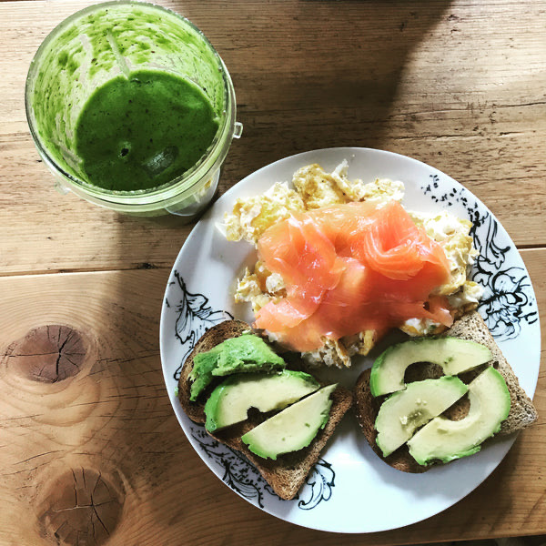
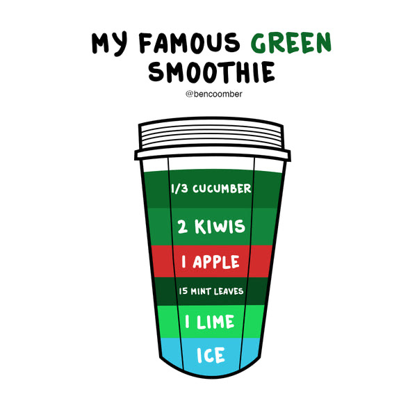
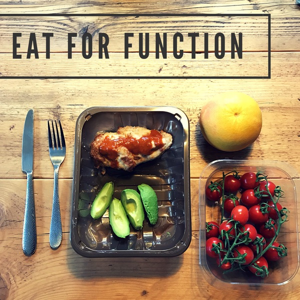
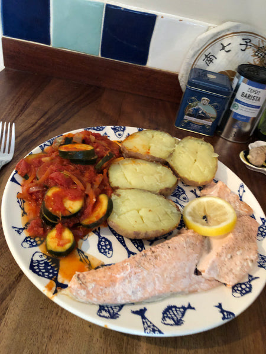
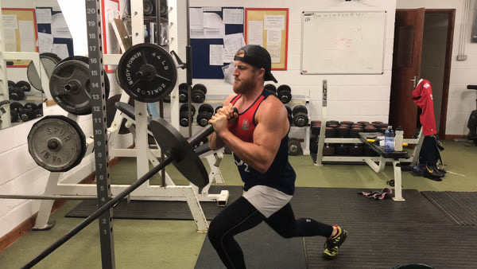
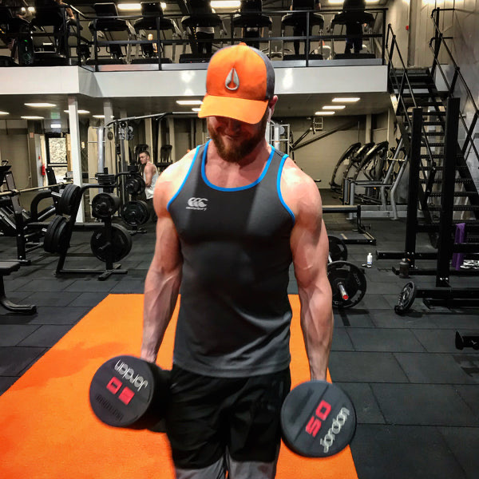
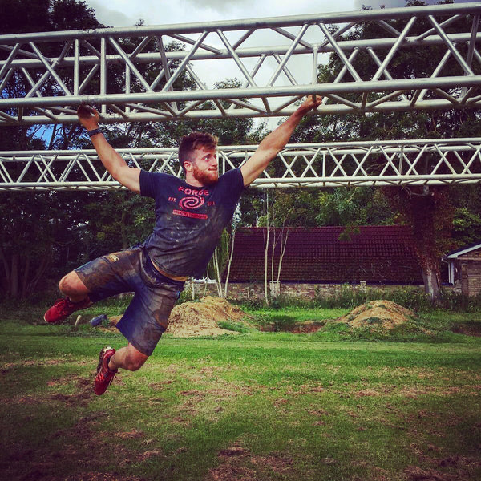

How to lose weight, plan your fitness and feel AWESOME

Every day I get emails, tweets and messages from people asking me how I do things. What I eat for breakfast, what foods I do and don't eat, what supplements I take, how I train, how I structure my time, and how I stay motivated to do what I do.
While I would always advocate personalised approaches to everything it's always useful to know the habits of those who have succeeded in something. I'm personally a massive fan of modelling behaviour, I've probably read over 50 autobiographies and listened to over 500 podcasts and audiobooks to learn the habits, traits and techniques of others, so it does work. You've just got to take that info and apply it in your own way, for your situation and goals, and of course be critical when listening to others (there's plenty of BS on the internet!).
What I personally do is dictated by my preferences, my schedule, my daily life with 2 kids, my business and my general situation and thus it wouldn't work for many people as a copy and paste approach. So learn from this for yourself, just as I have learnt from others and experimented with over the years to find my sweet spot
Now, while I'm no pro athlete I am fit, healthy, energised and strong enough for my purposes, thus there should be a nugget or two of useful stuff in here for people to take away to optimise mind, body and brain.
(BTW, this blog isn't a quick read, about 10-15 minutes, so if you've taken a quick click over here, be warned, there's a lot here).
So, without further delay, here's what I do and why...
What I eat
The majority of what I eat is 'real food', by which I mean largely unprocessed, single ingredient foods. Things that grew, swam and walked, or closely derived from. That being said, the focus of my diet is increasingly plant based, aiming for as many fruit and vegetable portions per day as I can physically manage, often hitting over 10 servings per day.
I believe that this kind of simple, stereotypically 'healthy' food should ideally make up 80-90% of your diet, and it's to this approach that I attribute the fact that I feel AWESOME 90% of the time, generally having energy all day long, have great skin, nails, hair, and generally feel like a healthy person without ailments.
Of course another positive to this kind of nutrient dense diet is that higher volume foods help regulate weight because it takes longer to eat and keeps you fuller for longer (more calorie dense, highly processed foods make it harder to stick to your daily calories goals due to being so rich in energy and also being hyper-palatable).

I'd say 80-90% of my diet is that kind of stuff So what's the other 10-20%?
Whatever I want to be honest. It's often made up of a few ice creams, beer, gin, crisps, take-away, that kind of thing. You know, the normal stuff people want and enjoy from time to time. This allows me to be sociable, to relax, to try new things and simply enjoy life with food, and because I keep it a small part of my diet I don't worry about my micronutrient or macronutrient intake, and because it's calorie appropriate it doesn't affect my body fat either.
So yes, just to clarify, I do eat 'junk food', but I don't see it as bad, just 'not ideal'. I make these foods a healthy part of my diet, a small % of my diet most of the time. Sometimes I am away and don't have access to good food all the time so more of it is 'not ideal', but I don't stress about it, I eat it, I just continue to calorie control it. Life isn't always perfect with food, no need to stress about it, control it when you can, don't stress when you can't, just be mindful and control what variables you can.
And this is essentially how I don't let it get out of control, I am always (most of the time) aware of how many calories are in foods so I can manage my weight because I’ve spent a good amount of time understanding what's in food. I don’t count calories daily, but have a good idea of what I’m eating from tracking them before - using that process to learn about food. I also eat good wholesome food, and it is harder to get fat when you’re eating real food in sensible portions.
Too many people go 'off the rails' eating ‘junk foods’, if this is you and serves you well, carry on, enjoy yourself, but if you get annoyed at the outcome the day after a cookie binge or a few too many beers, again, control the cookie binge, control how many beers you have, give yourself a rule, life without some form of self-imposed rules is only fun short term, not long term. So make some rules for yourself.
i.e. I'll eat 2 cookies which is 450 calories because that's my daily allowance. Or, I'll have 2 beers as that's then 450 calories and that is what I have allocated for myself, plus anymore and I'll feel sluggish tomorrow. I thus create a rule for the foods and drinks I am going to eat and stick to that rule, simply saying no when offered another (which is often the case and the time most say yes, again). Being the person that says “I can’t do that, I’m an all or nothing person” is bullshit. That's just a story you tell yourself to justify the behaviour because it's enjoyable / fun, at the time.
If you want to change, change the stories you tell yourself.
I take this approach to BOTH be healthy and manage my weight at a consistent 83kg, BUT also to enjoy my diet. I don't want to get fat, period. That's a rule for me. I'm not unhealthy with it, I don’t get worried if I have a take away and eat a lot, or decide on an extra plate of grandma's roast dinner, or take pudding when I know its going to be too much that day, I just enjoy it, make note of it, and try correct the balance the next day by eating a little less, or being a bit more active.
It can be that simple.
Are there foods I don't eat?
I don't eat much cows' dairy as I'm intolerant to it, so I have goat's dairy. What symptoms do I get from cows dairy? It makes me feel a touch sluggish and it makes me retain water so I end up looking watery and essentially fat, which I don't like. In the summer it also makes my hay fever worse and my hay fever brings back my childhood asthma which I hate, and makes that 10x worse too. So that's motivation enough to not eat it as hay fever and asthma symptoms suck!
I used to not eat gluten and wheat also as I had various gut issues, but I managed to work on and fix those over time and now I can eat it freely, which is awesome because I don't feel anyone should restrict their diet unnecessarily. Gluten, dairy and wheat aren't a problem for most but they are for some, and if you have chronic digestive issues then cutting out the things that cause flare ups is the logical first step, from there I would always recommend working with a specialist to figure out the best plan of action for repair/rehab of those issues. I firmly believe no individual will achieve optimal health without a fully functioning and healthy gut and immune system. So if you suspect issues I would highly recommend sorting them if you want to be optimal (there are many reported long term issues with an impaired gut wall and immune system, so while the symptoms might seem ok now, it might not always be like that).
What about the sports nutrition aspect of my diet to support gym training?
I generally eat a balanced macronutrient diet, it's adequate in its protein content for an active male (I eat around 2g per KG of body weight of protein per day) and has a varied and flexible mix of carbohydrates and fat. If I'm trying to lose weight, I will generally cut a little of both fat and carbohydrate from my diet, generally opting for even more fruits and vegetables over starches merely to keep food volume high and overall calories lower.
But as a general rule of thumb most of my meals are a pretty even mix of carbs, protein and fat, opting for what I fancy at a meal time most of the time, staying within the boundaries of what I know works for me (this means I never make a meal too high carb as I find that makes me sleepy, so I keep it low to moderate in carbs for optimal energy production).
I eat around 2800-3800 calories per day to support my general needs and my activity needs, eating around 2800 on a very sedentary day, and 3800 on a very active day. If I exercise more, I eat more, it's simple in and out.
My exercise output also varies quite considerably every day, as I said 2800-3800, so if I ate the same every day I would under eat quite often and over eat quite often, and while this would have a net calorie balance over the course of the week and see me maintain my weight, there would be days I would under eat too much and impair my recovery, so I generally match what I burn that day with what I eat.
If you do want to dial in this area of your nutrition, assessing your calorie need is a good first step, which you can do with the calorie calculator I built: Calorie calculator
How I often / when do I eat?
I tend to eat 3-5 meals a day depending on when I eat breakfast, how active I am that day, what I’m doing that day, and just how hungry I am feeling (less hungry, less meals, but bigger).
Breakfast is often at 8am (I often wake up around 5am, so if I am particularly hungry when I get up I'll have something small like an Awesome protein shake or bar with a piece of fruit, something quick so I can crack on with my work, if not I'll have breakfast properly later, if I am REALLY hungry or got a big day of training I'll get a big feed in early doors, but that's rare as I'm usually working from home at a leisurely pace).
Midday will be lunch time for me, usually.
I often train between 3-6pm, so I'll train and have a shake + creatine after unless I am eating with the kids around 5pm, then I’ll just train then eat.
But what do I actually eat?
So let's hit some examples of what food looks like for me:
Get up around 5-6.30am:
Coffee. If hungry an awesome bar or shake with a piece of fruit for convenience so I can get on and get some work done. I like starting early as it feels like I build momentum from the get-go
Breakfast
4 eggs with sourdough + fruit
OR
Protein smoothie with 4-6 servings of fruit/veg, or a smoothie without protein and I eat some kind of protein on the side
Or
Vegan protein porridge with some toppings I fancy
Or
Green Smoothie with an awesome protein bar
There are many things I eat for breakfast, often just what's in the fridge, but that gives you a few ideas. For me food is just food, if it's in the fridge I eat it, whatever it is. This is my infamous green smoothie if you want to try it:

Lunch
Soup with bread, I often add extra pulses to the soup
Or
Big salad with various toppings
Or
A sandwich that's fully loaded, sometimes with extra veg on the side or fruit or some crisps, depends how I'm feeling.
Or
A healthy ready meal from various companies, or meals I have previously prepped. I keep lots in my freezer
Or
Tuna and sweetcorn with salad cream (mayo, meh), with toast and mixed vegetable sticks
(as you can tell I'm a pretty simple lad when it comes to meals and food, its nothing complicated)

Pre-Exercise
Depending on the time I’ll have a coffee (I don’t drink coffee after 2pm so it doesn’t interfere with sleep), or just crack on and train. The less crutches around exercise the better, just allows you to get in and get it done. Might take Awesome Boost if training hard.
Intra-Training
1 scoop of Awesome Hydrate, always.
Post training
If not having dinner with the kids, a scoop of Awesome Protein + Awesome Strength, if not I’ll eat with the kids and take Awesome Strength in some water with Awesome Omega & Defence - an advanced daily multi-vitamin.
Evening meal
Jacket potato, some form of meat, veggies, corn on the cob with butter
Or
Spaghetti Bolognese
Or
Cottage pie
Or
Sausages and mash, sometimes made with vegan sausages
Or
A big curry made with chick peas and some tofu, often a Thai curry
Or
Baked salmon with lemon with mixed veggies and jacket potato.

Dinner is the meal I have the most variety in as I or the wife often cook, and we often have to cook kid friendly meals. We also eat out a bit more at the weekend.
As a whole, food for me during the day serves the purpose of fuel for energy and concentration for my day, then food in the evening is often more for enjoyment and pleasure, or to provide good nutrition for the kids.
What does my training plan look like?
I generally train to look good naked, perform well, and feel strong (strength for me is living day to day life feeling strong and being able to play sport injury free, it's not me needing or wanting to lift 200kg and push my max up continually, thus I generally train with weights heavy enough to feel like a resilient and strong human). I rarely lift or push my max strength as it takes a lot of training time, can often take a lot out of you, I find it quite boring gym work, and can lead to heightened injury risk in the gym, so I prefer more hypertrophy and strength endurance work.
That means training is a broad mixture of strength work, hypertrophy work, conditioning work, cardio, and stuff that's fun and outdoors. A typical training week might be 2-3x gym sessions which focus on weights, then some fun cardio like swimming, tennis, 20/20 cricket, long walks in the countryside, whatever I fancy really.

An upper body session might look like:
Warm up: 50 calories on the assault bike, mobility work, plyometrics
A1: Single arm overhead dumbbell carry 3x20m
A2: Single arm farmers walk 3x20m
1-2 minutes rest
B1: Dumbbell chest press 3x12
B2: Weighted chin ups 3x10
2 minutes rest
C1: Chest fly 3x10
C2: Bat wing row 3x8
C3: Skull crushers 3x12
C4: Lateral raises 3x15
DONE. Often 45-60 minutes.

A lower body session might look like:
Warm up: 50 calories on the assault bike, mobility work, plyometrics
A1: lateral body weight lunges
A2: Medicine ball squat squeeze
90s rest
B1: Weighted vest squat 3x15
2 minutes rest
C1: Walking lunges with plate overhead 3x8 (each leg)
90s rest
D1: Quad extension 4x12
D2: Hamstring curl machine or similar 4x8
D3: Standing calve raises with Sandbag on back 4x15
D4: Medicine ball / Swiss ball sit ups 4x10
DONE.
I want to be an all-round athlete, so I train like one, generally 2-3x per week in the gym and 2x a week other stuff I enjoy.

Sleep
Good sleep is essential in my personal opinion, especially if you want to be a high performing individual. I go to bed super early as I have 2 young kids, so aim to maximise my potential sleep window if they have me up in the right. So bedtime is usually 9pm in bed, asleep by 9:15-9:30. I've bought an amazing bed and comfy sheets as it makes all the difference in getting the perfect nights sleep. I literally love the moment I get in bed, love it.
When I wake the next day it's not to an alarm, I just naturally wake when my body wants to get up and go, which is usually 4.30-5.30, or later if I’ve been up in the night with the kids. One of the luxuries of being a business owner is that I get to wake when I wake, but it's usually 5-6.30am. You could likely do this if you went to bed earlier, but most go to bed as late as possible to get enough sleep before their alarm goes off.
Once I get up it's a big glass of water, make a coffee, get some cold air or water on my face, then either do some work, meditate, watch TV, or read. I have no fixed morning routine, it flows with my day's needs, the time I wake up, how I feel, or how long I have before the kids are gonna be up.
Either way I like to get up early and have time to myself before the kids or my wife gets up, some ME time.
Wrapping up:
So that's me, what I eat, how I supplement, how I train, and an insight into how I become a productive healthy machine. Which of course all needs to be organised. Organisation is really important in anyone's life in my opinion. People take the piss out of to do lists, but they are the cornerstone of getting shit done. Food shopping, family arrangements, business to do's, schedules and appointments with work, clients to contact, it all needs to be a finely tuned orchestra. If it's not organised it's just chaos, you're forever chasing your tail and your motivation disappears because you're forever frustrated. So I write and have a list and plan for everything, then I know what to do, when, and why. Including work, friends, the wife, the kids, food, training, it's all got a plan, and it all gets done, 90% of the time (after all life is never perfect, we just try aim for it), with enough fluidity for the throws of life to throw it off a bit.
Ultimately, everything I do is to be AWESOME and live an AWESOME life. And what we eat, how we move, and how we sleep is the cornerstone to this.
Consider how your diet, training and sleep is impacting your ability to be AWESOME.
Want more help on implementing any of the above?
You could grab a copy of my book ‘How to live an Awesome Life’, which covers all the above in detail.